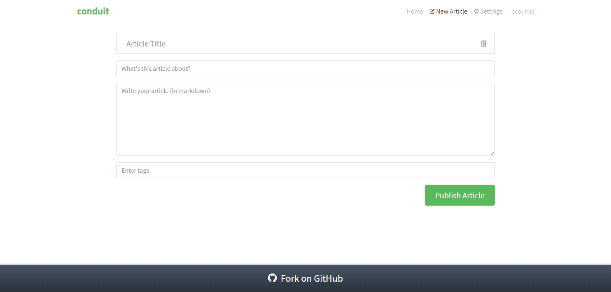

Editor route
In this section, we will modelize and implement the user flows related to the editor route. In that route, the user may:
- edit an existing article (
#/editor/:slug) - create a new article (
#/editor/) - publish a new or edited article
Articles may have a title, a subject, Markdown content, and a list of tags. Tags are entered in a dedicated field and added to the tag list by pressing the Enter key.
The following rules apply:
- unauthenticated users navigating to the editor page should be redirected to the home route
- unauthenticated users cannot publish articles. Any attempt to do so will trigger a redirection to the home route
- the editor form fields must be validated for the article to be added to the articles database. Validation happens server-side with the API returns validation errors in the form of an object.
- users cannot add a tag that is already present in the tag list
- if there is no corresponding article (assuming the user navigated to a
#/editor/:slugroute), the user is redirected to the home route
Events
We have the following events for the editor route:
| Event | Event data | Occurs when |
|---|---|---|
CLICKED_PUBLISH |
form data ({title, description, body, currentTag, tagList}) |
user submits the form |
FAILED_PUBLISHING |
errors (as returned from the publishing API) | user submitted the form but the request failed |
SUCCEEDED_PUBLISHING |
article data as returned by the API | user submitted the form and the request succeeded |
PRESSED_ENTER |
keyup event data | user clicks enter when form focus is on the tag field |
FAILED_FETCH_ARTICLE |
?? | API call fails |
FETCHED_ARTICLE |
article data as returned by the API | API call succeeds |
REMOVED_TAG |
clicked tag | user clicks on a tag from the tag list |
Additionally, the user may click on links (like settings). However, this is not handled directly by the machine. Instead, this is handled by the browser as any other links, triggering a change of URL, which then triggers a ROUTE_CHANGED event to the machine.
And….. there is one more thing that a lot of people may trip up on the first time (I did), so we talk about it here separately. This has to do with the concept of controlled vs. uncontrolled fields.
We render the title, description, body fields with their initial value, and we never need to update these fields after that. So our prop title would actually better read as initialTitle, to indicate that this title value is not an evolving value, but the value of the field when the form is first created. The field values on the screen, i.e. in the DOM may change freely without it being necessary for the application to be notified. Such free-evolving fields are called uncontrolled fields.
The situation changes for the tag DOM field. As the name indicates, the currentTag prop indicates the value of the tag at the time of rendering. This means than the Render command means updating the tag field on the form. In other words, the currentTag prop represents the evolving value of the tag field in the DOM. In yet other words, currentTag is bound to the value of the tag field. Some UI libraries implement this logic with two-way binding (Svelte is one of those). Other UI libraries implement the binding by tracking the events triggered by the field modification (typically keyup) and synchronize the internal field value with the field value as stored in the DOM. The currentTag is said to be a controlled field.
In our case, because we want the Render currentTag to mean to display the form with the corresponding tag field set to the currentTag value, it means we have to track i.e. control the tag DOM form field. That then means we need to add an event EDITED_TAG to do that tracking.
As a result, our events are now as follows:
| Event | Event data | Occurs when |
|---|---|---|
CLICKED_PUBLISH |
form data ({title, description, body, currentTag, tagList}) |
user submits the form |
FAILED_PUBLISHING |
errors (as returned from the publishing API) | user submitted the form but the request failed |
SUCCEEDED_PUBLISHING |
article data as returned by the API | user submitted the form and the request succeeded |
PRESSED_ENTER |
keyup event data | user clicks enter when form focus is on the tag field |
REMOVED_TAG |
clicked tag | user clicks on a tag from the tag list |
EDITED_TAG |
value of the tag field |
user modifies the tag field |
Commands
We have the following commands for the editor route:
| Command | Command parameters | Description |
|---|---|---|
REDIRECT |
hash to redirect to | redirects the user to a new/same hash location |
PUBLISH_ARTICLE |
article data ({title, description, body, tagList}) |
sends an API request to the publishing endpoint |
UPDATE_ARTICLE |
article data including slug ({slug, title, description, body, tagList}) |
sends an API request to the publishing endpoint |
UI
We already have identified the screens in the Specifications section. Ler’s remind them here:
| Route | State | Main screen |
|---|---|---|
#/editor |
Authenticated, new article |  |
#/editor/<title>-x4fafc |
Authenticated, edit article |  |
The UI for the editor route will be implemented with an Editor Svelte component. The full source code for the Editor component can be accessed in the repository.
UI testing
As before, we test the UI with Storybook. The corresponding stories are available in the source repository.
Commands implementation
To implement the PUBLISH_ARTICLE and UPDATE_ARTICLE command, we defer to the API. The logic, as before is enclosed into functions passed as effect handlers (saveArticle, and updateArticle):
[PUBLISH_ARTICLE]: (dispatch, params, effectHandlers) => {
const { title, description, body, tagList } = params;
const { saveArticle } = effectHandlers;
saveArticle({ title, description, body, tagList })
.then(data => {
dispatch({ [SUCCEEDED_PUBLISHING]: data.article });
})
.catch(({ errors }) => {
dispatch({ [FAILED_PUBLISHING]: errors });
});
},
[UPDATE_ARTICLE]: (dispatch, params, effectHandlers) => {
const { slug, title, description, body, tagList } = params;
const { updateArticle } = effectHandlers;
updateArticle({ slug, title, description, body, tagList })
.then(({ article }) => {
dispatch({ [SUCCEEDED_PUBLISHING]: article });
})
.catch(({ errors }) => {
dispatch({ [FAILED_PUBLISHING]: errors });
});
}User scenarios test
We test five key user scenarios, checking the aforementioned behavior rules, the content of which should be clear from their identifiers in the code:
const userStories = [
[
UNAUTH_USER_ON_EDITOR_NEW_ARTICLE_IS_REDIRECTED,
UNAUTH_USER_ON_EDITOR_NEW_ARTICLE_IS_REDIRECTED_INPUTS,
UNAUTH_USER_ON_EDITOR_NEW_ARTICLE_IS_REDIRECTED_COMMANDS
],
[
UNAUTH_USER_ON_EDITOR_EDIT_ARTICLE_IS_REDIRECTED,
UNAUTH_USER_ON_EDITOR_EDIT_ARTICLE_IS_REDIRECTED_INPUTS,
UNAUTH_USER_ON_EDITOR_EDIT_ARTICLE_IS_REDIRECTED_COMMANDS
],
[
AUTH_USER_ON_EDITOR_NEW_ARTICLE_SEES_FORM_ADDS_TWICE_SAME_TAGS_AND_PUBLISHES,
AUTH_USER_ON_EDITOR_NEW_ARTICLE_SEES_FORM_ADDS_TWICE_SAME_TAGS_AND_PUBLISHES_INPUTS,
AUTH_USER_ON_EDITOR_NEW_ARTICLE_SEES_FORM_ADDS_TWICE_SAME_TAGS_AND_PUBLISHES_COMMANDS
],
[
AUTH_USER_ON_EDITOR_EDIT_ARTICLE_SEES_FORM_ADDS_TWO_TAGS_REMOVES_ONE_PUBLISHES_EMPTY_SEES_ERRORS,
AUTH_USER_ON_EDITOR_EDIT_ARTICLE_SEES_FORM_ADDS_TWO_TAGS_REMOVES_ONE_PUBLISHES_EMPTY_SEES_ERRORS_INPUTS,
AUTH_USER_ON_EDITOR_EDIT_ARTICLE_SEES_FORM_ADDS_TWO_TAGS_REMOVES_ONE_PUBLISHES_EMPTY_SEES_ERRORS_COMMANDS
],
[
AUTH_USER_ON_EDITOR_EDIT_ARTICLE_FAILED_FETCH_AND_IS_REDIRECTED,
AUTH_USER_ON_EDITOR_EDIT_ARTICLE_FAILED_FETCH_AND_IS_REDIRECTED_INPUTS,
AUTH_USER_ON_EDITOR_EDIT_ARTICLE_FAILED_FETCH_AND_IS_REDIRECTED_COMMANDS
]
];Behaviour modelization
The modelization we reach is the following:

Zooming in on the Editor route compound control state:

Refactoring
We have two reasons for refactoring appearing. On the one hand, all compound states have a transition towards the routing control state. That transition relates to the user clicking links, which cause a change of route and possibly a redirection to another part of the application. We have those transitions for the four routes we have modelized so far, and we can expect that to remain true for any new route that we are going to modelize. This means we can factor those transitions out into a single transition from a compound control state comprising all the route control states:
We created here a compound control state called Application core with a transition triggered by the ROUTE_CHANGED event. We thus replaced four transitions by a single one, simplifying the graph, while keeping the exact same semantics. To remind semantics of the visual formalism, an event triggering a transition from a compound state to a target control state (ROUTE_CHANGED is such an event) is equivalent to an event on each sub-states of that compound state triggering a transition to the same target control state.
If you are familiar with algebra, we simply factorized $(a \underset{event}{\rightarrow}b , a \underset{event}{\rightarrow} c , a \underset{event}{\rightarrow} d , a \underset{event}{\rightarrow} e)$ into $a \underset{event}{\rightarrow}(b,c,d,e)$ where the $a \underset{event}{\rightarrow}b $ indicates a transition from $a$ to $b$ triggered by $event$ and $(a,b)$ indicates two control states which are part of the same compound control state. To make it more obvious, this is the same as expressing $ab+ac+ad+ae$ as $a(b+c+d+e)$, where $ab$ is the same as $a \underset{event}{\rightarrow}b$, and $a+b$ is the same as $(a,b)$.
That refactoring is useful as, not only we removed here three edges from our visualization, making it more readable, but also, as we keep on adding routes, the same transition triggered by ROUTE_CHANGED will still be valid. Thus, for $n$ similar transitions, we will have saved $n-1$ edges from the visualization.
The second reason for refactoring is directed by reuse purposes. The forms from the sign-in route, the sign-up route, and the editor route behave in similar ways. In all three routes, the user can only see the form if he is authenticated, then the submitting operation can only go through if the user is authenticated, and if the submitting operation is not successful, errors are displayed on the form, otherwise, the user is redirected.
To make this obvious, let’s compare the sign up route and the editor routes’ modelization:
| sign up route | sign in route |
|---|---|
 |
Let’s now look at the editor visualization with the same emphasis:
| sign up route | editor route |
|---|---|
 |
We have highlighted the common graph structure shared by those three visualizations, i.e. the common behavior shared by these three parts of the application. By the rule of three, we have found a candidate target for DRY refactoring.
How would we proceed and factor this common behavior so it can be reused in the implementation of all three routes? We already isolated the common behavior, next we abstract or lift as parameters the parts constituting the common behavior, i.e. the events, action factories, commands involved in that behavior. Concretely, our common behavior can be represented by the following machine part:

Now that is not a valid machine, as there is no initial control state. However, this machine part has all the transitions that figure in all previous three routes implementation. We thus define a function which computes the transitions to add to a given machine to implement the authenticated form submitting behaviour (src/behaviour/abstracted.js):
/**
* @param {{events: AuthFormEvents, actionFactories: AuthFormActionFactories, states: AuthFormStates,
* isAuthenticatedGuard: Guard}} def
* @return {*[]}
*/
export function getAuthenticatedFormPageTransitions(def) {
const { events, states, actionFactories, isAuthenticatedGuard } = def;
const { AUTH_CHECKED, SUBMIT_TRIGGERED, FAILED_SUBMISSION, SUCCEEDED_SUBMISSION } = events;
const {
fetchingAuthenticationPreForm,
fetchingAuthenticationPreSubmit,
enteringData,
fallback: fallbackState,
submitting,
done
} = states;
const {
showInitializedForm,
showSubmittingForm,
submit,
fallback: fallbackActionF,
retry,
finalize
} = actionFactories;
const isNotAuthenticatedGuard = isNot(isAuthenticatedGuard);
return [
{
from: fetchingAuthenticationPreForm,
event: AUTH_CHECKED,
guards: [
{ predicate: isAuthenticatedGuard, to: enteringData, action: showInitializedForm },
{ predicate: isNotAuthenticatedGuard, to: fallbackState, action: fallbackActionF }
]
},
{
from: enteringData,
event: SUBMIT_TRIGGERED,
to: fetchingAuthenticationPreSubmit,
action: showSubmittingForm
},
{
from: fetchingAuthenticationPreSubmit,
event: AUTH_CHECKED,
guards: [
{ predicate: isAuthenticatedGuard, to: submitting, action: submit },
{ predicate: isNotAuthenticatedGuard, to: fallbackState, action: fallbackActionF }
]
},
{ from: submitting, event: SUCCEEDED_SUBMISSION, to: done, action: finalize },
{ from: submitting, event: FAILED_SUBMISSION, to: fetchingAuthenticationPreForm, action: retry }
];
}We use that function to write the transitions for the implementation of the editor route modelization, as will be shown in the upcoming implementation section.
Behaviour implementation
The implementation (src/behaviour/editor.js) derives directly from the modelization. We reproduce here the main part which are the transitions:
export const editorTransitions = [
{
from: "editor",
event: INIT_EVENT,
guards: [
{
predicate: isEditorEditArticleRoute,
to: "fetching-article-editor",
action: fetchArticle
},
{
predicate: isNot(isEditorEditArticleRoute),
to: "fetching-authentication-editor-pre-form",
action: resetEditorRouteStateAndFetchAuth
}
]
},
{ from: "editor", event: ROUTE_CHANGED, to: "routing", action: updateURL },
{
from: "fetching-article-editor",
event: FETCHED_ARTICLE,
to: "fetching-authentication-editor-pre-form",
action: updateEditorRouteStateAndFetchAuth
},
{
from: "fetching-article-editor",
event: FAILED_FETCH_ARTICLE,
to: "routing",
action: redirectToHome
},
{
from: "editing-new-article",
event: EDITED_TAG,
to: "editing-new-article",
action: renderTagField
},
{
from: "editing-new-article",
event: ADDED_TAG,
guards: [{ predicate: isNewTag, to: "editing-new-article", action: addTagAndRender }]
},
{
from: "editing-new-article",
event: REMOVED_TAG,
to: "editing-new-article",
action: removeTagAndRenderTagList
},
getAuthenticatedFormPageTransitions({
events: {
AUTH_CHECKED,
SUBMIT_TRIGGERED: CLICKED_PUBLISH,
FAILED_SUBMISSION: FAILED_PUBLISHING,
SUCCEEDED_SUBMISSION: SUCCEEDED_PUBLISHING
},
states: {
fetchingAuthenticationPreForm: "fetching-authentication-editor-pre-form",
fetchingAuthenticationPreSubmit: "fetching-authentication-editor-pre-publish",
enteringData: "editing-new-article",
fallback: "routing",
submitting: "publishing-article",
done: "routing"
},
isAuthenticatedGuard: isAuthenticated,
actionFactories: {
showInitializedForm: renderEditorForm,
showSubmittingForm: fetchAuthenticationAndRenderInProgressAndUpdateFormData,
submit: publishArticle,
fallback: redirectToHome,
retry: renderEditorFormWithErrorsAndFetchAuth,
finalize: updateUrlAndRedirectToArticle
}
})
].flat();Note how we use the transitions computed by the getAuthenticatedFormPageTransitions function and how we integrate them in the editor route machine. As a final note, we have decided (for now) against refactoring the other two routes which exhibit the behavior we just abstracted. Those routes are already written and tested, so we don’t have a productivity advantage here. If the behavior abstracted in the getAuthenticatedFormPageTransitions should require tweaking in the future (because of bugs or else), we will then consider using the mentioned abstraction for our two routes, so they also benefit from that tweaking. But as of now, we don’t have much to win by doing rewriting the existing implementation of those two routes exhibiting a common behavior.
Summary
We modelized and implemented the Editor route portion of our Conduit clone app. Our modelization allowed us to handle nested routing very naturally. We handled some specific aspects of forms (controlled fields vs. uncontrolled fields), and decided to control the tag field of the editor form. We refactored our visual modelization by factoring the ROUTE_CHANGED event into an Application core compound state containing all the route substates. We also refactored the implementation of the machine for the editor route by extracting the common parts of three of the previously implemented routes and abstracting the varying parts into parameters for a factory function.
The first refactoring enhances the readability of the visualization, and the capacity to communicate the application behavior to stakeholders in a more concise way. It is important to note that this refactoring is merely visual: the semantics addressed by the visualization are exactly the same. We have not reduced or increased the complexity of our application, we instead reduced the complexity of the visualization, and slightly that of the implementation. This refactoring additionally has slightly increased maintainability, as, when new routes will be added to the Application core compound state, they will automatically be subject to the transition triggered by the ROUTE_CHANGED event.
The second refactoring does not pursue a reduction in lines of code. Actually, it may often be that lines of code increase as a result of the indirection caused by the getAuthenticatedFormPageTransitions function. Rather, the idea is to reuse a logic that has already been implemented several times, speeding up the implementation of new occurrences of that logic, and removing possible mistakes occurring when duplicating that logic. The more complex a shared behavior is, the more beneficial it is to capture it in a reusable form. It is up to the programmer to determine when the benefits compensate for the indirection cost of the reusable abstraction.
We decided for instance against abstracting the following behavior of an API call:

We believe this behavior is simple enough to not be worth being abstracted.
Lastly, we do not recommend to abstract too early. It is important to evaluate the generality of the abstraction (the rule of three is a good rule of thumb), its current benefits, and its future applicability.